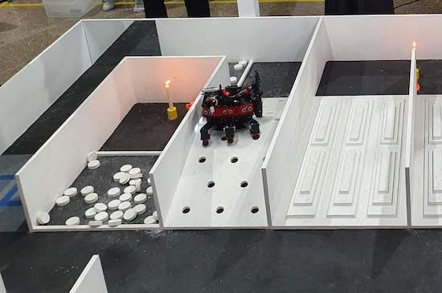
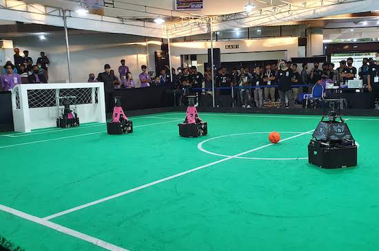
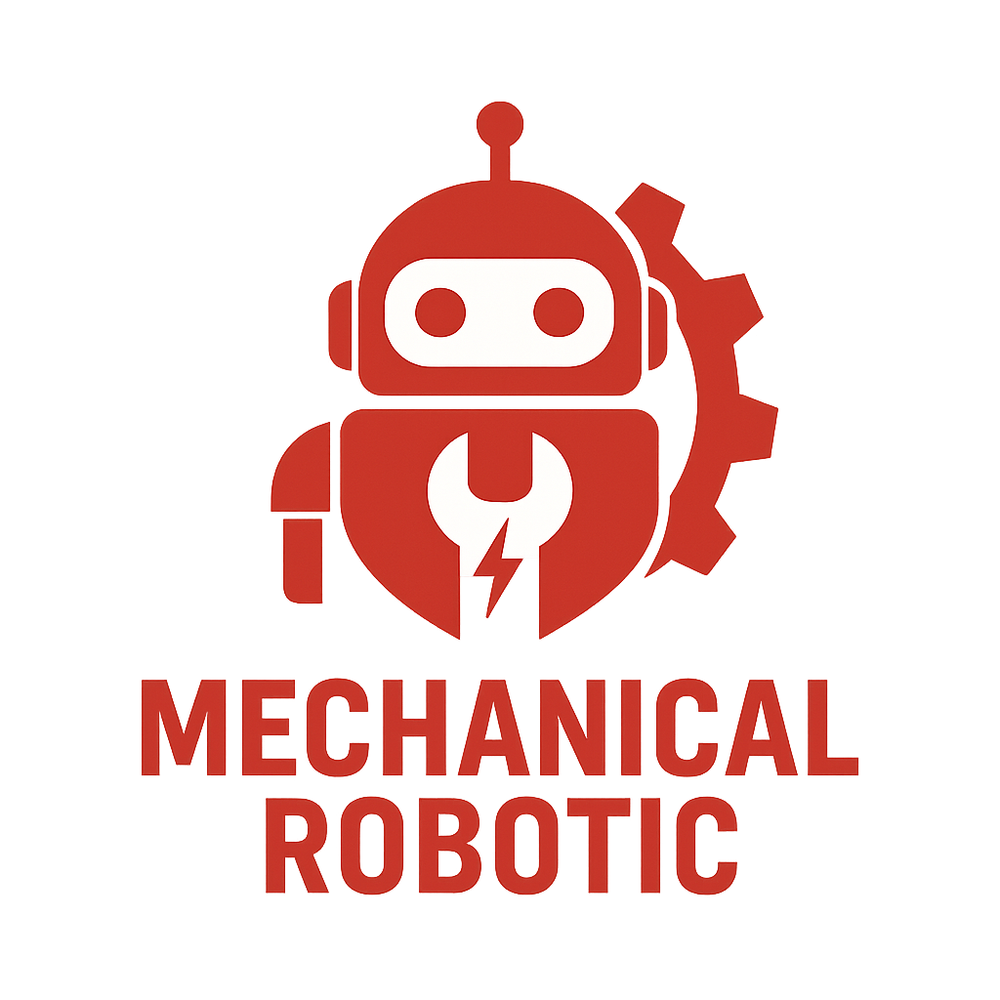
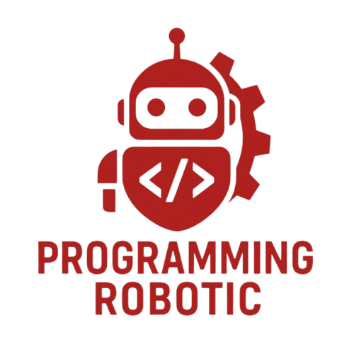
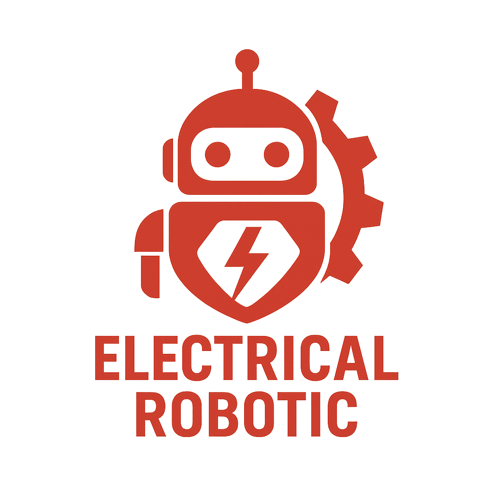

Divisi yang berfokus pada Kontes Robot SAR Indonesia (KRSRI) menekankan pada misi pencarian dan penyelamatan bencana yang umum terjadi di Indonesia. KRSRI mengadopsi robot berkaki yang digunakan pada KRPAI.

Divisi yang berfokus pada Kontes Robot Sepak Bola Indonesia (KRSBI) Beroda, mengacu pada divisi Middle Size League (MSL) RoboCup Soccer League. Aturan kontes KRSBI mengadopsi MSL Rules and Regulation.


Divisi dari ilmu robotika yang fokus pada perancangan dan konstruksi bagian-bagian mekanis robot. Ini melibatkan aspek rekayasa mekanik seperti desain gripper, sistem transmisi, kopling, dan faktor lain seperti inersia, tegangan, kemampuan menahan beban, dan respons dinamis.

Divisi tim yang berfokus pada pengembangan perangkat lunak untuk mengendalikan dan mengatur robot. Divisi ini bertanggung jawab atas pembuatan, pengujian, dan pemeliharaan kode yang memungkinkan robot untuk menjalankan tugas-tugas tertentu, seperti navigasi, penginderaan, dan manipulasi.

Divisi dalam robotika yang berfokus pada aspek listrik dan elektronika dari desain, konstruksi, dan operasi robot. Ini melibatkan perancangan dan pengembangan sirkuit, sensor, aktuator, sistem kontrol, dan perangkat lunak yang memungkinkan robot untuk berfungsi dengan benar.